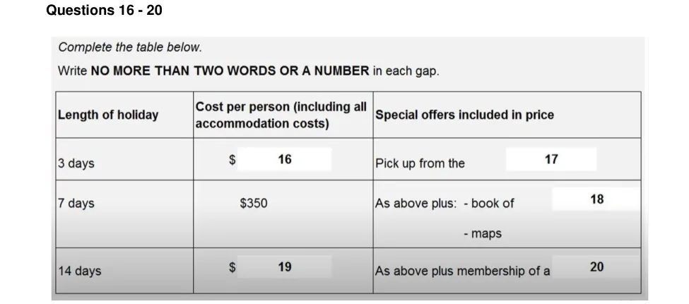
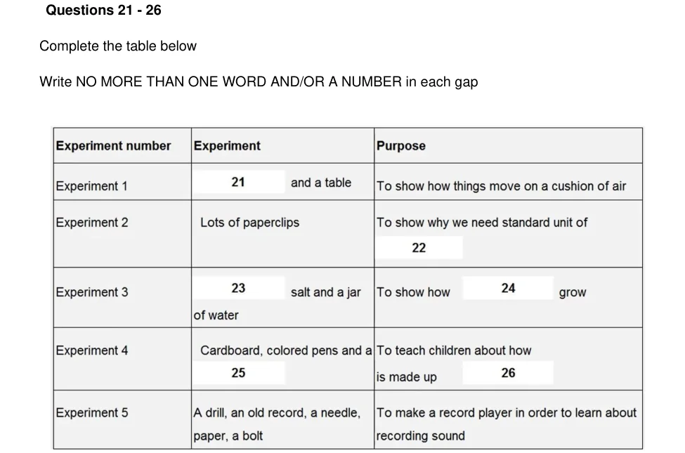
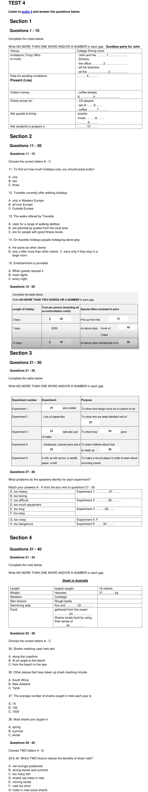

IELTS Listening: Test 4
Listening and questions
Section 1Questions 1–10
Questions 1–10
Complete the notes below.
Write NO MORE THAN ONE WORD AND/OR A NUMBER in each gap Goodbye party for John
Venue: College Dining room
Invitations (Tony) Who - John and his 1 to invite: -Director
the office 2
all the teachers
all the 3
Date for sending invitations: 4
Present (Lisa)
Collect money: - coffee breaks
-$ 5
CD players
Check prices for:
set of 6
coffee 7
Ask guests to bring: -snacks
-music 8
9
Ask students to prepare a - 10
Section 2Questions 11–20
Questions 11–15
Choose the correct letters A - C
11 To find out how much holidays cost, you should press button
12 Travelite currently offer walking holidays
13 The walks offered by Travelite
14 On travelite holidays people holidaying alone play
15 Entertainment is provided

Section 3Questions 21–30

Questions 27–30
What problems do the speakers identify for each experiment?
Match your answers A - H from the box next to questions 27 - 30
A. too messy Experiment 1: 27
- B too boring
C. too difficult Experiment 2: 28
- D too much equipment
E. too long Experiment 3: 29
- F too easy
- G too noisy Experiment 4: F
H. too dangerous Experiment 5: 30
Section 4Questions 31–40
Questions 31–34
Complete the note below Write NO MORE THAN ONE WORD AND/OR A NUMBER in each gap
Shark in Australia
Length: largest caught 16 metres
Weight: Heaviest 31 kg
Skeleton: Cartilage
Skin texture: Rough barbs
Swimming aids: fins and 32
Food: gathered from the ocean
33
Sharks locate food by using their sense of
34
Questions 35–38
Choose the correct letters A - C
35 Sharks meshing uses nets laid
36 Other places that have taken up shark meshing include
37 The average number of sharks caught in nets each year is
38 Most sharks are caught in
Questions 39–40
Choose TWO letters A - G
39 & 40 Which TWO factors reduce the benefits of shark nets?
Show the original book pages (picture)

Tap or click the pages to open them full size in a new tab.
Check your answers
Marking ignores capital letters and accepts plurals and the usual alternative answers. If your answer is right but not accepted, press My answer is also right under it.
Tapescript
Check your answers first, then the tapescript opens here.